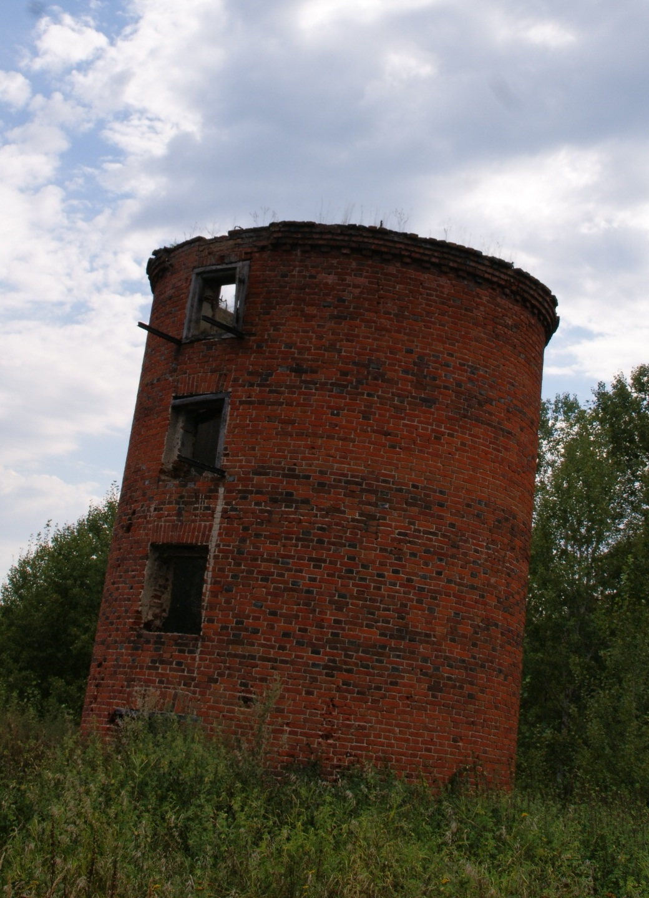

Про Долгоруково мне нечего добавить, проходите на страничку,
и полюбуйтесь избранными местами моего родного села.

Аничкино село хоть и небольшое, но вокруг него очень красиво,
а самое главное тихо. Грустно, конечно, видеть как место и его окрестности
постепенно исчезают или заростают,
но я надеюсь на его возраждение.
Гранки находятся довольно далеко от моего родного села,
но среди всех мест куда я езжу, эта деревня моя самая любимая.
Перед селом, тебя встречает заброшенный яблоневый сад.
Ну, а в самом посёлке ждёт очень красивый вид на реку.
Куракино - большое село, где есть даже платина.
В последнее годы восстанавливают усадьбу княза Александра Борисовича Куракина.
Проект подразумевал открытие частной школы на территории,
надеюсь она откроется.
Сазанье - красивое и обустроенное месте.
Тут можно и прогулятся, и испить воды.
При желании можно искупаться в купели.
Ну и конечно сходить в Казанскую Алексиево-Сергиевскую пустынь.
А если очень повезёт то и в Пещерный храм можно попасть.